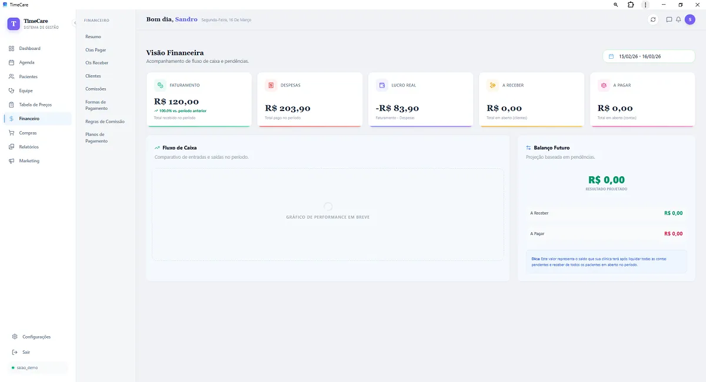

Potencia Operativa para Clínicas, Equipos y Consultorios
Elimina cuellos de botella en la recepción, garantiza una estricta protección de datos clínicos y mantén el inventario y el flujo de caja en tiempo real con la plataforma SaaS más confiable del sector.

Gobernanza Completa del Recorrido del Paciente
Desde el primer contacto en recepción hasta el alta del tratamiento, con auditoría completa de procedimientos e insumos.

Control de Cobros y Liquidación por Especialista
Genera informes de producción detallados por profesional, calcula comisiones automáticamente y mantén la conciliación de caja sin errores manuales.
Múltiples Profesionales (RBAC)
Niveles de permisos seguros para recepcionistas, administradores y especialistas.
Inventario Automatizado
Descuento automático de materiales e insumos vinculados al procedimiento realizado.
Historia Clínica Electrónica
Evoluciones clínicas, odontograma y notas protegidas bajo altos estándares de privacidad.
IA Operativa
Previsión de inasistencias y detección de huecos ociosos en las agendas de los especialistas.
Seguridad Rigurosa y Ética Médica de Datos
Bases de datos empresariales con canales cifrados de extremo a extremo y gobernanza total.
Privacidad de Datos Clínicos
Aislamiento lógico de datos por organización con registros inmutables de auditoría y control de accesos.
Acceso Multiplataforma
Accede desde la recepción (Desktop Windows o Mac) o mediante los dispositivos móviles de los doctores vía aplicación web progresiva (PWA).
Implantación con Capacitación
Nuestro equipo técnico acompaña la parametrización de agendas, carga de procedimientos y capacitación de los recepcionistas.
Preguntas Frecuentes sobre TimeCare Pro
Tras completar el formulario de contacto, nuestro equipo se comunicará para coordinar una presentación guiada en línea, mostrando las funciones de historia clínica, agendas unificadas y control de insumos adaptadas a tu clínica.
TimeCare Pro es totalmente escalable. Resuelve desde consultorios con 2 especialistas hasta centros de salud con más de 30 salas y recepcionistas concurrentes.
Moderniza la Gestión de tu Clínica
Solicita contacto de nuestro equipo para conocer los planes y coordinar una demostración personalizada sin compromiso.